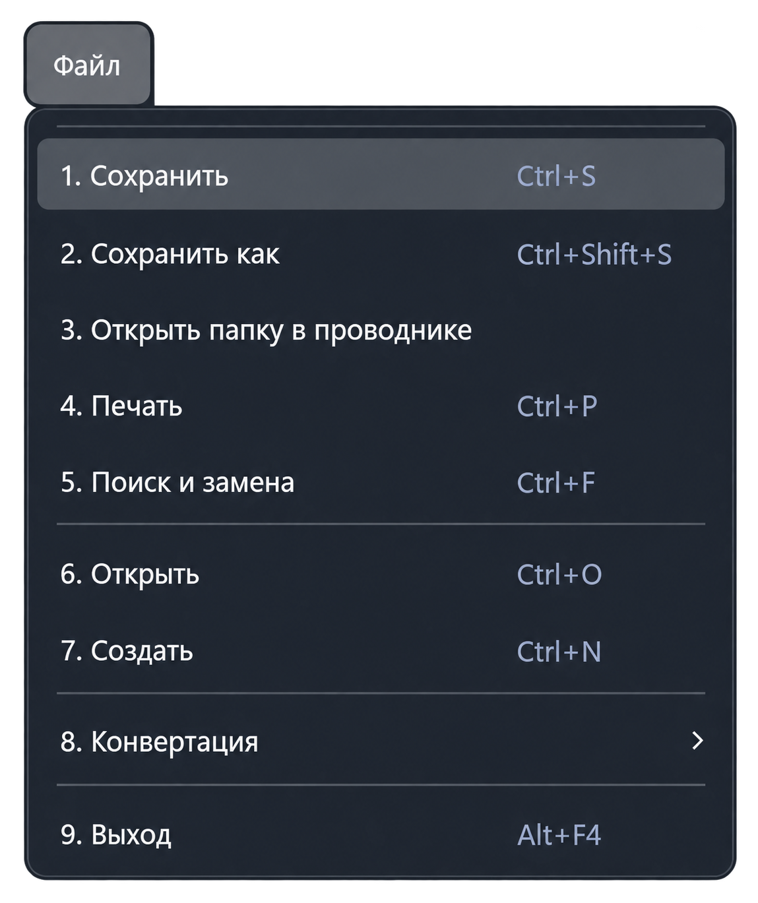

Функция «Сохранить»
Команда «Файл → Сохранить» записывает изменения активного документа. Перед вызовом переключитесь на нужную вкладку текстового редактора.
Сочетание клавиш: Ctrl + S.

Как сохранить изменения
- Выберите документ в редакторе.
- Нажмите Ctrl + S или выберите «Файл → Сохранить».
- Если у документа уже есть путь, приложение сохраняет текст в этот файл. Если путь ещё не выбран, откроется окно «Сохранить как».
Для нового документа выберите имя, папку и тип файла, затем подтвердите сохранение. При отмене диалога новый файл не сохраняется.
Особенности
- Если текст не изменился, повторная запись существующего файла не требуется.
- После успешной записи обновляется состояние сохранённого документа и индикатор изменений вкладки.
- При ошибке записи приложение показывает сообщение. Проверьте путь, права доступа и доступность файла.
Чтобы выбрать другой путь или имя, используйте «Сохранить как». Обычное сохранение относится к текущему документу, а не ко всем открытым вкладкам.